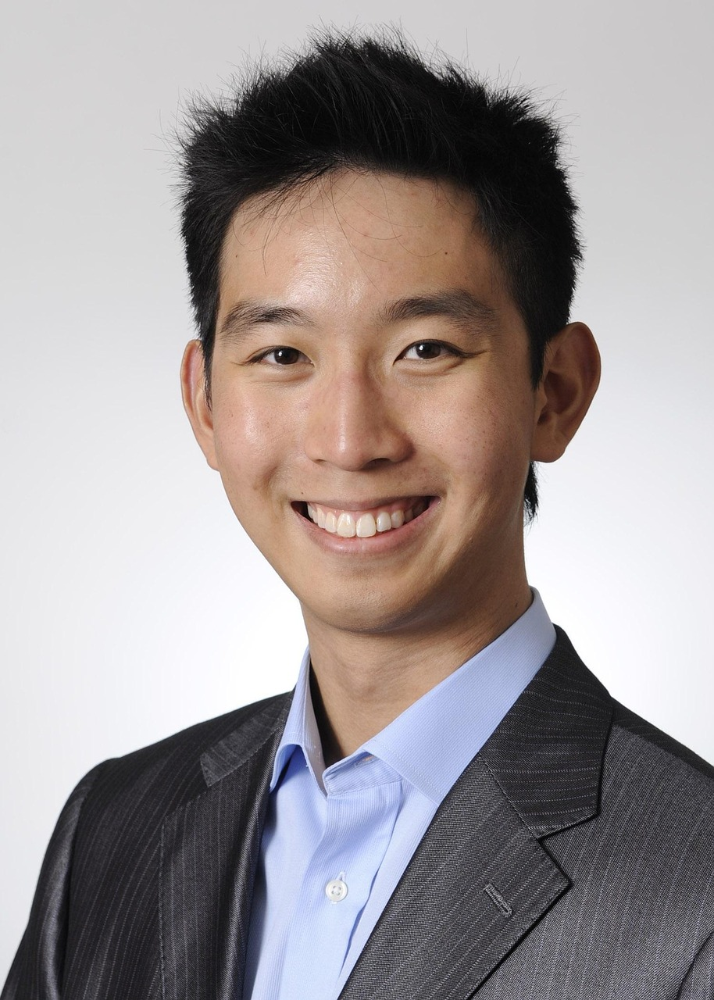

Photography Services
Wedding Photography Package
Capture your special day with a full-service wedding package that includes pre-wedding consultation, 6–8 hours of coverage, ceremony and reception photography, and a private online gallery. Optional add-ons include a second photographer and printed albums.
Price: $1,200 – $2,000 depending on coverage time and add-ons.

School Portrait Sessions
Perfect for students of all ages. We offer classic school portraits with a variety of backdrops or can come to your school for on-location sessions. Includes 15-minute session time, 3 edited images, and digital delivery. Group and sibling discounts available.
Price: $50 per student | $40 for each additional sibling.

Candid Lifestyle Photography
Our signature service focused on capturing real moments. We photograph individuals, couples, or families in natural settings such as parks, homes, or favorite hangouts. Ideal for social media, lifestyle blogs, or anyone wanting authentic images.
Price: $250 for a 1-hour session | $400 for 2 hours (includes 15+ edited photos).

Event Coverage
From birthday parties and reunions to community and corporate events, we provide discreet and reliable coverage. Includes up to 75 edited images, full usage rights, and quick turnaround delivery.
Price: $600 for up to 4 hours | $100/hour after that.

Professional Headshots
Stand out with clean, polished headshots for business, portfolios, or social media. In-studio or on-location options available. Includes light retouching and digital delivery in multiple sizes/formats.
Price: $150 per session | Group rates available for companies or teams.
